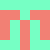

Identicons in Go

Use the following to get the libs:
go get github.com/GeorgeMac/idicon
Use the following to get the idicon command
go get github.com/GeorgeMac/idicon/cmd/idicon
See: idicon command
lib usage
Basically this:
generator, err := icon.NewGenerator(5, 5, icon.UseMd5, icon.SvgSize(10))
if err != nil {
// handle error
}
// use the generator for a given string input
icn := generator.Generate(`GeorgeMac`)
// string representation
fmt.Print(icn)
// svg string representation
fmt.Print(icn.Svg())
NewGenerator with variadic options
type option func(g *Generator) error
func NewGenerator(width, height int, ...option) *Generator { ... }
Current available options include:
icon.UseSha1 // pointless because it does this by default but meh
icon.UseMd5 // use md5 hash function for generating identicons
icon.SvgSize(size int) // set the width/height of the outputted svg squares
Future options, currently NOT available:
icon.SetPalette(basePalette, complPalette)
icon.Use* // any hash functions the community desire?
icon.UseHash(func() hash.Hash) // user supplied hash generator function